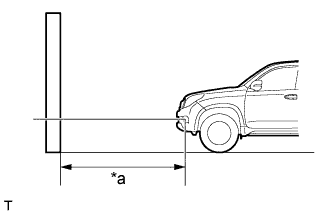

ЭЛЕКТРОДВИГАТЕЛЬ НАСОСА СТЕКЛООМЫВАТЕЛЯ (переднего) > УСТАНОВКА |
| 1. УСТАНОВИТЕ ЭЛЕКТРОДВИГАТЕЛЬ И НАСОС СТЕКЛООМЫВАТЕЛЯ ВЕТРОВОГО СТЕКЛА В СБОРЕ |
Установите электродвигатель и насос стеклоомывателя ветрового стекла в уплотнение бачка омывателя.
| 2. УСТАНОВИТЕ БАЧОК ОМЫВАТЕЛЯ ВЕТРОВОГО СТЕКЛА В СБОРЕ |
Введите в зацепление направляющую, установите бачок омывателя и закрепите его 3 винтами.
Для моделей без системы очистителей фар:
Подсоедините разъем.
Для моделей с системой очистителей фар:
Подсоедините 3 разъема.
| 3. УСТАНОВИТЕ ВПУСКНОЙ ПАТРУБОК СТЕКЛОМЫВАТЕЛЯ В СБОРЕ |
Введите в зацепление захват, чтобы установить впускной патрубок.
| 4. ЗАПОЛНИТЕ БАЧОК ОМЫВАТЕЛЯ ОМЫВАЮЩЕЙ ЖИДКОСТЬЮ |
Подсоедините шланг стеклоомывателя к насосу и электродвигателю насоса стеклоомывателя ветрового стекла в сборе и заполните бачок омывателя омывающей жидкостью.
| 5. УСТАНОВИТЕ БРЫЗГОВИК ПРАВОГО ПЕРЕДНЕГО КРЫЛА В СБОРЕ |
Установите брызговик переднего крыла в сборе и закрепите его 13 новыми уплотнительными втулками.
Заверните 2 винта.
| 6. УСТАНОВИТЕ БРЫЗГОВИК ПРАВОГО ПЕРЕДНЕГО КРЫЛА |
Установите брызговик переднего крыла и закрепите его 4 винтами и 2 фиксаторами.
| 7. УСТАНОВИТЕ ПЕРЕДНЕЕ КОЛЕСО |
| 8. УСТАНОВИТЕ НАКЛАДКУ ПЕРЕДНЕГО БАМПЕРА |
Для моделей с сенсорной системой помощи при парковке TOYOTA и противотуманными фарами:
Подсоедините 3 разъема.
Для моделей с сенсорной системой помощи при парковке TOYOTA без противотуманных фар:
Подсоедините 2 разъема.
Для моделей без сенсорной системы помощи при парковке TOYOTA и с противотуманными фарами:
Подсоедините разъем.
Для моделей с системой очистителей фар:
Подсоедините шланг очистителя фар.
Закрепите 12 захватов, чтобы установить накладку переднего бампера.
Вверните 2 болта A, 2 болта B, 6 винтов и 6 фиксаторов.

| *1 | Болт A | *2 | Болт B |
| 9. УСТАНОВИТЕ РЕШЕТКУ РАДИАТОРА |
Установите решетку радиатора (Нажмите здесь).
| 10. ПОДГОТОВЬТЕСЬ К ПРОЦЕДУРЕ РЕГУЛИРОВКИ НАПРАВЛЕНИЯ СВЕТА ПРОТИВОТУМАННЫХ ФАР (для моделей с противотуманными фарами) |
|  |
Подготовьте автомобиль следующим образом:
| *a | 25 или 3 м |
Приготовьте лист плотной белой бумаги (приблизительно 2,0 м (6,56 фута) (длина) x 4,0 м (13,1 фута) (ширина)) для использования в качестве экрана.
Проведите через центр экрана вертикальную линию.
Установите экран, как показано на рисунке.

 |
Начертите на экране главные оси (горизонтальную, правую и левую вертикальную линии), как показано на рисунке.
| *a | Левая вертикальная линия |
| *b | Вертикальная линия |
| *c | Правая вертикальная линия |
| *d | Горизонтальная линия |
| *e | Масса |
Горизонтальная линия (высота противотуманной фары):
Начертите на экране горизонтальную линию так, чтобы она прошла через центральные метки. Горизонтальная линия должна располагаться на той же высоте, что и центральные метки ламп противотуманных фар.
Левая и правая вертикальные линии (для отметки центральных точек левой и правой противотуманных фар):
Проведите две вертикальные линии таким образом, чтобы они пересекали горизонтальную линию на центральных метках.
| 11. ПРОВЕРЬТЕ НАПРАВЛЕНИЕ СВЕТА ПРОТИВОТУМАННЫХ ФАР (для моделей с противотуманными фарами) |
Закройте противотуманную фару на противоположной стороне или отсоедините ее разъем, чтобы свет от противотуманной фары, которая не проверяется, не влиял на проверку направления света противотуманной фары.
Запустите двигатель.
Включите противотуманные фары и удостоверьтесь, что граничная линия находится в заданной зоне, как показано на рисунке.

| *A | Расстояние для регулировки: 25 м | *B | Расстояние для регулировки: 3 м |
| *a | Левая вертикальная линия | *b | Правая вертикальная линия |
| *c | Горизонтальная линия | - | - |
| 12. ОТРЕГУЛИРУЙТЕ НАПРАВЛЕНИЕ СВЕТА ПРОТИВОТУМАННЫХ ФАР (для моделей с противотуманными фарами) |
 |
Отрегулируйте направление света по вертикали.
| *1 | Винт регулировки |